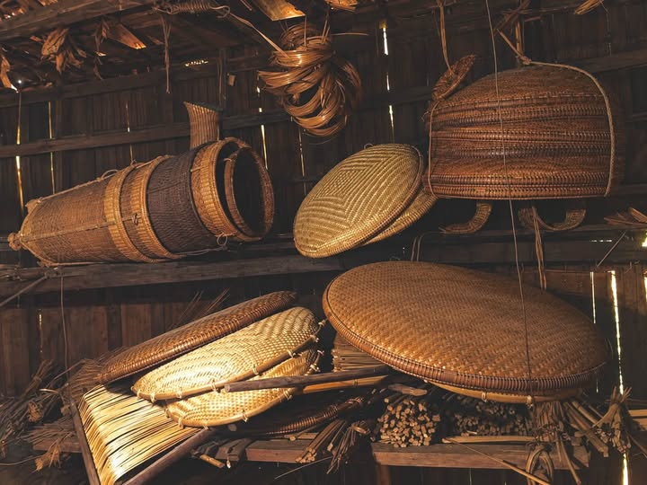
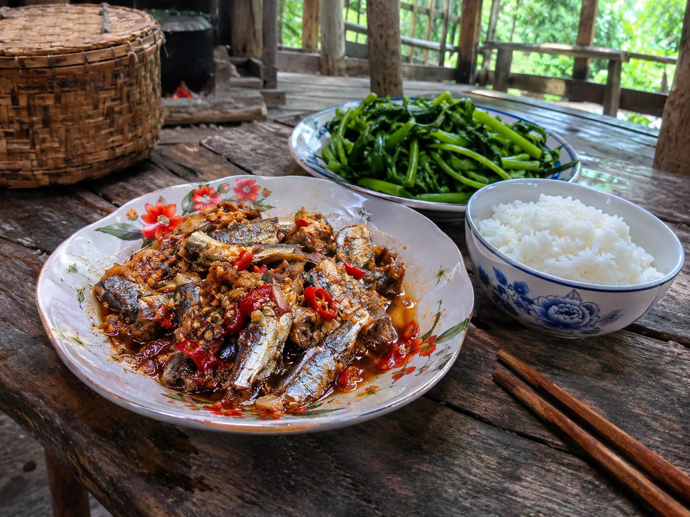
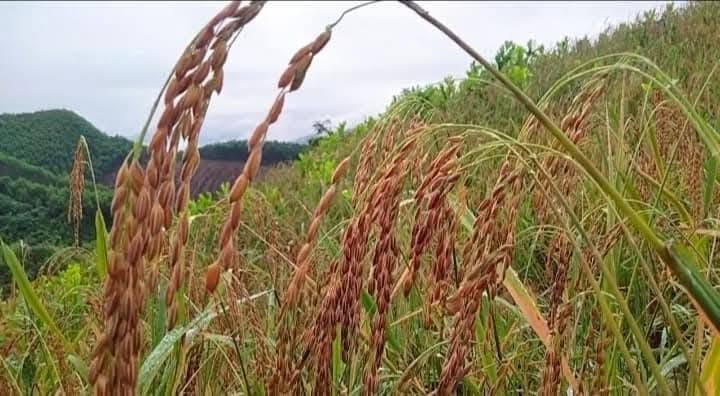
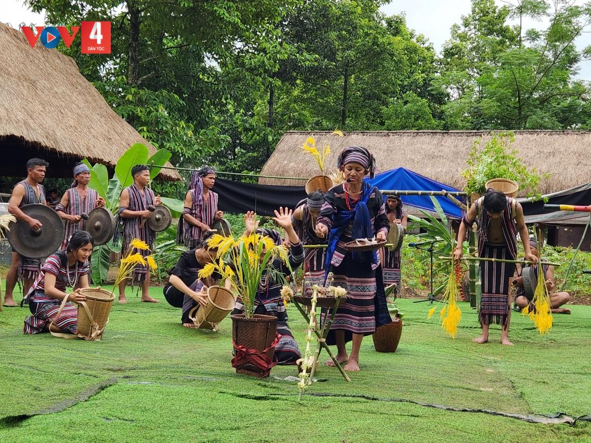
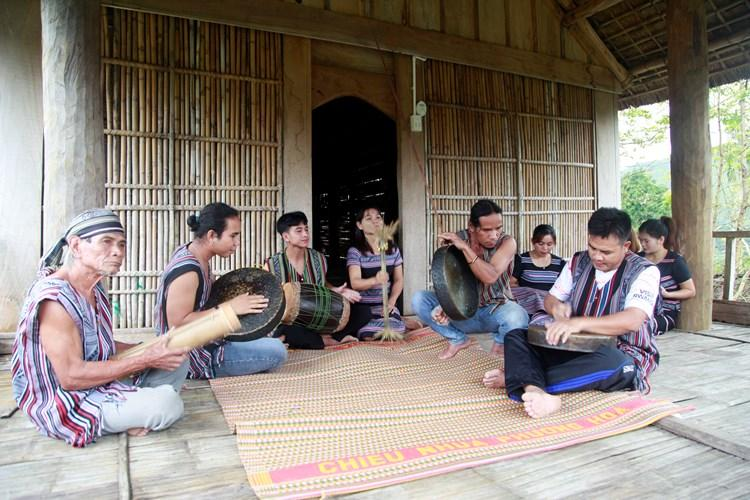
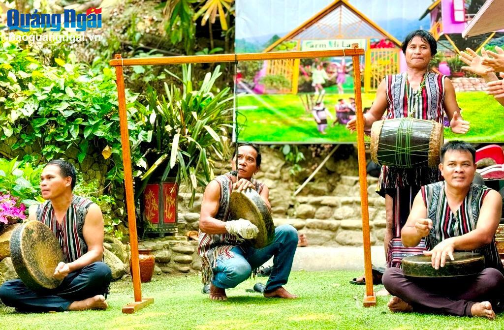
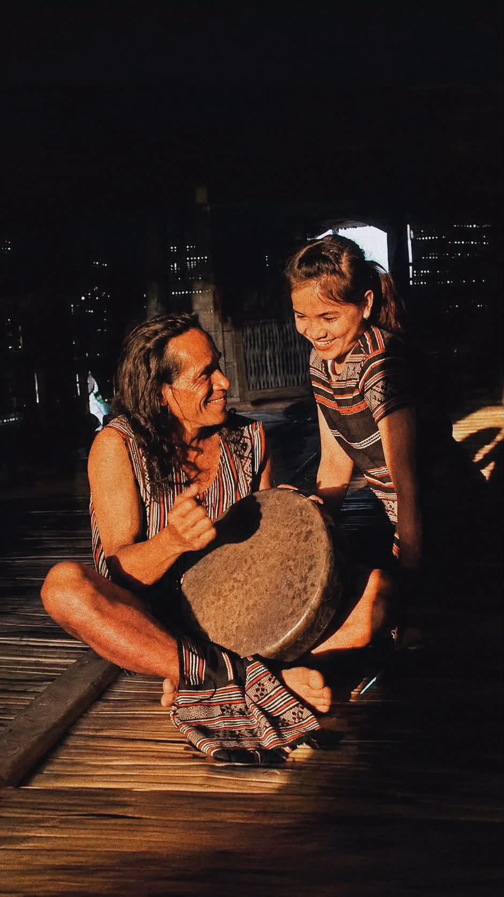
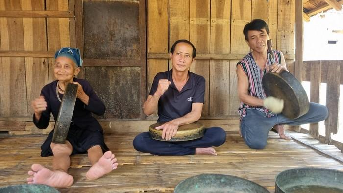

Trang phục thổ cẩm
Sự giao hòa giữa màu đen của đất, màu đỏ của lửa dệt nên hoa văn truyền thống tinh xảo của đồng bào H'rê.
Nơi bảo tồn ngọn lửa văn hóa, những nếp nhà sàn truyền thống và lan tỏa hơi ấm bản sắc của đồng bào H'rê.
BƯỚC VÀO KHÔNG GIAN →Đồng bào H'rê bao đời nay gắn bó mật thiết với rẫy nương, rừng núi. Làng bản của họ mang vẻ đẹp mộc mạc nhưng ẩn chứa một kho tàng văn hóa vô cùng đặc sắc được hun đúc qua nhiều thế hệ.
Không gian văn hóa này như một đốm than hồng, được thắp lên nhằm lưu giữ từng lời ca, điệu múa, nếp nhà và phong tục tập quán mộc mạc của cộng đồng H'rê.
Đây là nơi kết nối cộng đồng, truyền lửa cho thế hệ trẻ trân trọng và tiếp nối di sản văn hóa của cha ông giữa dòng chảy hiện đại.
Dấu chân khai mở đất đai và ngọn lửa văn hóa lưu truyền qua ngàn thế hệ.
Người H'rê (còn gọi là người Chăm Rê, Chom, Thượng Ba Tơ...) là một trong những cư dân bản địa sinh sống lâu đời bậc nhất tại dải đất miền Trung, thuộc nhóm ngôn ngữ Môn - Khmer.
Khác với nhiều dân tộc anh em ven dãy Trường Sơn chủ yếu làm nương rẫy, người H'rê từ rất sớm đã chinh phục thiên nhiên, khai khẩn các thung lũng hẹp để lập nên những thửa ruộng bậc thang tuyệt đẹp.
Trải qua bao thăng trầm, ngọn lửa trong gian bếp nhà sàn của người H'rê chưa bao giờ tắt. Ngọn lửa ấy vẫn ngày đêm sưởi ấm và trao truyền một kho tàng di sản đồ sộ.
Mỗi nét văn hóa là một câu chuyện, một ký ức đượm mùi khói bếp và một niềm tự hào của cộng đồng.
Sự giao hòa giữa màu đen của đất, màu đỏ của lửa dệt nên hoa văn truyền thống tinh xảo của đồng bào H'rê.

Lắng đọng cùng tiếng chiêng, đàn Ka-lắc và làn điệu Ta-lêu, Ca-choi bên bếp lửa nhà sàn.
Giai điệu H'rê:

Những mái nhà sàn nép mình bên sườn đồi, khói lam chiều vấn vương hòa cùng nhịp sống mộc mạc.
TÌM HIỂU THÊM →
Hương vị núi rừng qua ché rượu cần nồng ấm, thịt gác bếp, măng le và cơm lam nướng ống tre.
TÌM HIỂU THÊM →
Nghề dệt thổ cẩm, đan lát mây tre truyền thống được các nghệ nhân gửi gắm linh hồn của đại ngàn.
TÌM HIỂU THÊM →Sắc màu thổ cẩm – Nét đẹp trang phục truyền thống của người Hrê

Trang phục truyền thống là một trong những nét văn hóa đặc sắc, góp phần tạo nên bản sắc riêng của cộng đồng người Hrê ở vùng núi phía Tây tỉnh Quảng Ngãi. Qua từng tấm vải, đường dệt và hoa văn trang trí, người Hrê gửi gắm tình yêu thiên nhiên, quan niệm thẩm mỹ và những giá trị văn hóa được gìn giữ qua nhiều thế hệ.
Trong trang phục truyền thống của người Hrê, phụ nữ thường mặc váy ống, kết hợp với áo, yếm và khăn đội đầu. Đàn ông trước đây thường mặc khố, chít khăn và sử dụng tấm choàng thổ cẩm trong một số dịp. Trang phục được dệt thủ công, có kiểu dáng giản dị nhưng mang nét riêng trong cách phối màu và trang trí hoa văn.
Điểm dễ nhận thấy ở thổ cẩm Hrê là sự kết hợp giữa hai màu chủ đạo đen và đỏ, bên cạnh những đường nét màu trắng tạo điểm nhấn. Các màu sắc và cách phối hợp hoa văn tạo nên vẻ đẹp riêng, gắn với quan niệm truyền thống và đời sống của cộng đồng.
Hoa văn trên trang phục Hrê không đơn thuần là những họa tiết trang trí. Qua bàn tay khéo léo của người phụ nữ, hình ảnh thiên nhiên, sông suối, con vật và các vật dụng quen thuộc trong đời sống được thể hiện bằng những đường nét cách điệu.
Các họa tiết hình học, đường dích dắc, đường thẳng song song và những hình ảnh gợi liên tưởng đến thiên nhiên tạo nên vẻ đẹp hài hòa cho tấm vải. Hoa văn được tạo trực tiếp trong quá trình dệt bằng kỹ thuật cài sợi, đòi hỏi sự tỉ mỉ và kinh nghiệm của người thợ.
Ngày nay, trang phục thường ngày của người Hrê đã có nhiều thay đổi theo nhịp sống hiện đại. Tuy nhiên, trang phục truyền thống vẫn được sử dụng trong các dịp lễ hội, sinh hoạt văn hóa, biểu diễn nghệ thuật và những sự kiện quan trọng của cộng đồng.
Việc gìn giữ trang phục truyền thống không chỉ là bảo tồn một sản phẩm thủ công mà còn là cách lưu giữ ký ức văn hóa của dân tộc. Mỗi bộ trang phục Hrê là một câu chuyện về đôi bàn tay lao động, sự sáng tạo và niềm tự hào về cội nguồn.
Ta lêu, Ca chôi – Tiếng lòng của người Hrê giữa đại ngàn
Giữa không gian núi rừng miền Tây Quảng Ngãi, âm nhạc dân gian Hrê mang vẻ đẹp mộc mạc, sâu lắng và giàu cảm xúc. Những làn điệu dân ca, tiếng chiêng cùng âm thanh của các nhạc cụ truyền thống đã trở thành một phần không thể thiếu trong đời sống tinh thần của cộng đồng.
Ta lêu là một làn điệu dân ca tiêu biểu của người Hrê. Đây là hình thức hát kể, thường có bài bản nhất định, được sử dụng để thể hiện những câu chuyện, tâm tư và những điều gần gũi trong cuộc sống.
Thông qua Ta lêu, người hát có thể kể về quê hương, gia đình, lao động sản xuất, tình yêu cuộc sống và những câu chuyện được lưu truyền trong cộng đồng. Giai điệu mộc mạc nhưng giàu sức biểu cảm, mang đậm hơi thở của núi rừng và cuộc sống thường ngày.
Nếu Ta lêu thiên về kể chuyện thì Ca chôi nổi bật với hình thức hát đối đáp, giao duyên và tâm tình. Người hát có thể đối đáp giữa nam và nữ, giữa những người cùng giới, ứng tác lời ca ngay trong lúc diễn xướng.
Nội dung Ca chôi phong phú, có thể nói về tình yêu đôi lứa, chuyện gia đình, cuộc sống cộng đồng, quê hương và đất nước. Sự linh hoạt trong lời hát tạo nên nét hấp dẫn riêng, thể hiện khả năng ứng đối và sự tinh tế của người Hrê.
Những làn điệu dân ca có thể được thể hiện cùng tiếng chiêng và các nhạc cụ truyền thống. Âm điệu mộc mạc hòa quyện tạo nên không gian văn hóa đặc trưng, vang lên trong dịp lễ hội, cưới hỏi, khi lao động hoặc lúc mọi người quây quần bên bếp lửa.
Âm nhạc vì thế không chỉ dành riêng cho sân khấu mà hiện diện trong chính đời sống của người dân, góp phần kết nối các thành viên và trao truyền những câu chuyện của cộng đồng.
Hát Ta lêu và Ca chôi là những giá trị văn hóa cần được tiếp tục gìn giữ, trao truyền. Việc nghệ nhân hướng dẫn thế hệ trẻ học hát, tìm hiểu ý nghĩa lời ca và tham gia biểu diễn góp phần duy trì sức sống của dân ca trong đời sống hiện đại.
Mỗi lời hát Ta lêu, mỗi câu Ca chôi không chỉ là âm thanh của núi rừng mà còn là tiếng lòng, là ký ức và niềm tự hào của cộng đồng người Hrê.
Nhà sàn Hrê – Không gian lưu giữ nếp sống cộng đồng
Trải qua nhiều thế hệ sinh sống giữa núi rừng Trường Sơn, người Hrê đã hình thành những nét kiến trúc nhà ở mang đậm dấu ấn văn hóa bản địa. Trong đó, nhà sàn truyền thống không chỉ là nơi che mưa nắng mà còn là không gian sinh hoạt gia đình, nơi gìn giữ phong tục, tập quán và những giá trị tinh thần của cộng đồng.
Nhà sàn truyền thống của người Hrê thường được dựng trên những triền đất, chân gò hoặc khu vực gần ruộng đồng, nguồn nước. Vật liệu xây dựng chủ yếu lấy từ tự nhiên như gỗ, tre, nứa, lồ ô, tranh và dây mây.
Nhà thường có hai hàng cột song song tạo thành hai vì cột. Không gian bên trong được bố trí thành các khu vực sinh hoạt, nghỉ ngơi và tiếp khách. Cách dựng nhà thể hiện sự thích nghi với điều kiện địa hình và môi trường sinh sống của người Hrê.
Một đặc điểm dễ nhận biết ở một số nhà sàn truyền thống Hrê là hình tượng sừng trâu được tạo ở hai đầu nóc nhà bằng vật liệu phù hợp. Trong đời sống truyền thống, trâu có vai trò quan trọng đối với hoạt động sản xuất nông nghiệp và đời sống tâm linh của người Hrê. Hình tượng này gắn với quan niệm tín ngưỡng dân gian, thể hiện mối quan hệ giữa con người, vật nuôi và thế giới tự nhiên.
Trong ngôi nhà sàn truyền thống, bếp lửa giữ vị trí quan trọng. Đây là nơi nấu nướng, sưởi ấm và cũng là không gian để các thành viên trong gia đình quây quần sau một ngày lao động.
Bên bếp lửa, người lớn kể chuyện xưa, truyền dạy kinh nghiệm sống, phong tục và những bài dân ca cho con cháu. Những câu chuyện, tiếng hát và sinh hoạt gia đình góp phần làm cho ngôi nhà sàn trở thành nơi lưu giữ ký ức văn hóa qua nhiều thế hệ.
Nhà sàn không chỉ gắn với đời sống riêng của mỗi gia đình mà còn có mối liên hệ mật thiết với sinh hoạt chung của làng. Đây là không gian diễn ra những cuộc gặp gỡ, tiếp khách, kể chuyện dân gian, hát Ta lêu, Ca chôi và nhiều hoạt động văn hóa truyền thống khác.
Ngày nay, cùng với sự phát triển của đời sống, nhiều ngôi nhà đã được cải tiến để phù hợp hơn với nhu cầu sinh hoạt. Việc bảo tồn những ngôi nhà sàn truyền thống vẫn có ý nghĩa quan trọng trong gìn giữ kiến trúc bản địa và bản sắc văn hóa Hrê.
Làng nghề thủ công Hrê – Tinh hoa từ đôi bàn tay người bản địa
Từ những nguyên liệu gần gũi với núi rừng, cộng đồng người Hrê đã sáng tạo nên nhiều sản phẩm thủ công phục vụ đời sống. Trong đó, nghề dệt thổ cẩm là một nét văn hóa tiêu biểu, thể hiện sự khéo léo, óc sáng tạo và khả năng lưu giữ tri thức truyền thống của người dân.
Nhắc đến nghề thủ công truyền thống của người Hrê ở Quảng Ngãi, không thể không nhắc đến nghề dệt thổ cẩm tại Làng Teng, xã Ba Thành, khu vực Ba Tơ. Nghề dệt được lưu truyền qua nhiều thế hệ, gắn bó mật thiết với đời sống của người phụ nữ Hrê.
Từ những sợi bông, người thợ thực hiện các công đoạn chuẩn bị sợi, tạo màu, mắc sợi lên khung và dệt thành sản phẩm hoàn chỉnh. Nghề dệt thổ cẩm truyền thống của người Hrê ở xã Ba Thành đã được ghi danh là Di sản văn hóa phi vật thể quốc gia năm 2019.
Điểm đặc sắc của thổ cẩm Hrê nằm ở kỹ thuật tạo hoa văn ngay trong quá trình dệt. Người thợ phải tính toán, sắp xếp từng sợi chỉ để tạo nên các họa tiết theo ý muốn.
Màu đen và đỏ thường được sử dụng làm màu chủ đạo, kết hợp với màu trắng cùng những đường nét hình học và hình ảnh cách điệu từ thiên nhiên. Mỗi tấm vải là kết quả của sự kiên trì, tỉ mỉ và kinh nghiệm được tích lũy qua nhiều năm.
Từ nghề dệt truyền thống, người Hrê tạo ra nhiều sản phẩm phục vụ đời sống như váy, khố, khăn đội đầu, tấm choàng và vải địu trẻ em. Không chỉ có giá trị sử dụng, mỗi sản phẩm còn mang giá trị thẩm mỹ và thể hiện nét văn hóa riêng của cộng đồng.
Bên cạnh nghề dệt, các hoạt động đan lát từ mây tre cũng gắn bó với đời sống người Hrê. Những chiếc gùi và vật dụng đựng, vận chuyển nông sản phản ánh sự khéo léo, khả năng tận dụng nguyên liệu tự nhiên và kinh nghiệm lao động của người dân.
Trong nhịp sống hiện đại, việc bảo tồn nghề thủ công truyền thống có ý nghĩa quan trọng đối với sự phát triển văn hóa và kinh tế cộng đồng. Các hoạt động truyền dạy kỹ thuật dệt, giới thiệu sản phẩm, quảng bá hình ảnh làng nghề và khuyến khích người trẻ tham gia đang góp phần duy trì sức sống của nghề truyền thống.
Làng Teng không chỉ là nơi lưu giữ kỹ thuật dệt thổ cẩm mà còn là điểm đến để du khách tìm hiểu văn hóa, gặp gỡ nghệ nhân và trải nghiệm những giá trị thủ công đặc sắc của người Hrê. Mỗi sản phẩm được tạo ra từ đôi bàn tay người thợ là một câu chuyện về lao động, sự sáng tạo và tình yêu đối với văn hóa dân tộc.
Sức sống mãnh liệt nơi rẻo cao miền Trung – Tây Nguyên
Dân tộc H'rê là một trong những dân tộc thiểu số sinh sống lâu đời ở khu vực miền Trung Việt Nam, chủ yếu thuộc vùng núi phía Đông dãy Trường Sơn. Theo kết quả Tổng điều tra dân số và nhà ở năm 2019, dân tộc H'rê có tổng dân số 149.460 người.
Người H'rê phân bố tập trung đông nhất tại khu vực miền núi phía Tây tỉnh Quảng Ngãi, đặc biệt ở các địa bàn Sơn Hà, Ba Tơ và Minh Long (theo địa danh hành chính trước năm 2025). Ngoài ra, đồng bào còn sinh sống tại Sơn Tây, Trà Bồng, một số khu vực thuộc Nghĩa Hành, Tư Nghĩa và các địa bàn lân cận. Người H'rê cũng cư trú tại khu vực An Lão (Bình Định cũ, nay thuộc tỉnh Gia Lai) và một bộ phận sinh sống ở Kon Plông (Kon Tum cũ, nay thuộc tỉnh Quảng Ngãi).
Về điều kiện địa lý, cộng đồng H'rê chủ yếu cư trú ở vùng núi, thung lũng và các khu vực ven sông, suối thuộc sườn Đông dãy Trường Sơn. Một số địa bàn cư trú gắn với lưu vực sông Trà Khúc và sông Vệ. Đây là những khu vực có nguồn nước và đất đai thuận lợi cho hoạt động sản xuất nông nghiệp, đặc biệt là canh tác lúa nước.
Trải qua nhiều thế hệ, người H'rê đã hình thành các cộng đồng làng truyền thống, gọi là plây, gắn bó với môi trường tự nhiên và có mối quan hệ cộng đồng chặt chẽ. Dù sinh sống ở nhiều địa bàn khác nhau, đồng bào vẫn gìn giữ tiếng nói, trang phục, phong tục tập quán và những giá trị văn hóa truyền thống đặc sắc, góp phần tạo nên bản sắc văn hóa phong phú của vùng đất miền Trung – Tây Nguyên.
Hơi thở đại ngàn trong từng hương vị
Mâm cơm của người H'rê không bắt đầu từ những khu chợ sầm uất, mà cội nguồn của nó nằm ở triền rẫy, khe suối và những cánh rừng già. Ẩm thực nơi đây mang trong mình triết lý của sự nguyên bản và mộc mạc. Mỗi mớ rau dớn cắn vội giọt sương, búp măng le đầu mùa hay con cá niên vừa bắt lên từ suối đá đều là món quà thuần khiết mà mẹ thiên nhiên hào phóng ban tặng.
Không cầu kỳ tẩm ướp, chẳng phô trương hương liệu, người H'rê chuộng cách chế biến mộc mạc nhất như nướng ống tre, luộc, hay vùi trong tro nóng. Mượn vị thanh mát của nước suối, mùi ngai ngái của ống nứa tươi và hơi ấm rực rỡ của than hồng để làm chín thức ăn, người H'rê đã tạo nên một sự hòa quyện tuyệt đẹp giữa con người và vạn vật. Họ nương tựa vào rừng già, lấy đi sự sống nhưng luôn biết chừng mực và nâng niu trọn vẹn tinh túy ban sơ.
Ngồi quây quần bên bếp lửa bập bùng, nhấm nháp miếng thịt gác bếp dai ngọt cùng chóe rượu cần thơm hương men lá, ta mới hiểu hết cái hồn của người H'rê. Giản dị, chân chất nhưng lại đậm đà và nồng ấm vô cùng — ẩm thực nơi đây chính là tấm gương phản chiếu tâm hồn ngay thẳng, hiền hòa và tình yêu thiên nhiên mãnh liệt của những người con đại ngàn.
Đậm đà bản sắc ẩm thực của đồng bào H'rê

Rau ranh và ốc đá là sự kết hợp hoàn hảo từ thiên nhiên ban tặng cho vùng cao. Rau ranh mọc hoang dã trên các triền đồi, phiến lá non nớt mang vị ngọt nhẩn đắng đặc trưng. Ốc đá bắt từ những khe suối trong vắt, thịt béo và giòn sần sật. Khi nấu canh chung, món ăn có vị thanh mát, ngòn ngọt, vừa giúp giải nhiệt trong những ngày hè oi ả, vừa là "phương thuốc" dân gian bồi bổ sức khỏe rất được đồng bào ưa chuộng.

Thịt trâu gác bếp không chỉ là món ăn dự trữ qua mùa mưa dầm mà còn là đặc sản để thiết đãi khách quý đến nhà. Những thớ thịt trâu tươi, săn chắc được thái dọc, tẩm ướp kỹ lưỡng với các loại gia vị nồng nàn của núi rừng như muối, ớt, tiêu rừng, sả... rồi treo lên gác bếp. Khói từ củi lửa cháy rả rích ngày qua ngày hun khô miếng thịt, làm quyện vào đó mùi hăng hăng ngai ngái của khói bếp, tạo nên vị ngọt đậm đà, dai ngon khó cưỡng khi xé từng thớ thịt.

Rau dớn là một loại cây thuộc họ dương xỉ, thường mọc nhiều ở những vách đá ven suối hay dưới tán rừng ẩm ướt. Phần ngon nhất để chế biến là những ngọn non tơ uốn cong cuộn tròn như vòi voi. Rau dớn chần sơ qua nước sôi rồi đem xào với tỏi phi thơm lừng. Món ăn tuy chế biến cực kỳ dân dã, đơn giản nhưng lại giữ được độ giòn sần sật, vị nhơn nhớt thanh mát quyện với chút chát nhẹ, vô cùng đưa cơm.

Cá niên là món quà quý mà những dòng suối đá róc rách ban tặng cho đồng bào H'rê. Loài cá này chỉ sống ở nơi nước chảy xiết, thức ăn chủ yếu là rong rêu nên thịt cá rất sạch và săn chắc. Cách chế biến ngon nhất là để nguyên con nướng xém vàng rực trên than hồng, rồi bày mộc mạc lên mẹt tre lót lá chuối xanh. Gỡ miếng thịt cá béo ngậy, nhẩm chút vị đắng nhẫn đặc trưng của ruột cá, vắt thêm chút nước cốt chanh tươi, rồi quệt qua chén muối ớt xanh giã nhuyễn đựng trong chiếc ống tre nhỏ. Ăn kèm mớ rau rừng thanh mát, tất cả hòa quyện tạo nên một hương vị hoang sơ, đậm đà hơi thở của sương gió đại ngàn.

Cá chuồn muối kho thịt heo là món ăn dân dã, đậm đà hương vị quê nhà, đặc biệt thích hợp trong những ngày đông se lạnh. Cá chuồn được muối để bảo quản lâu ngày, khi đem kho cùng thịt ba chỉ tạo nên sự kết hợp hấp dẫn giữa vị mặn mòi của cá và vị béo mềm của thịt heo. Cá được kho liu riu trên bếp lửa cùng hành, tiêu, ớt và các loại gia vị cho đến khi nước kho sánh lại, thấm đều vào từng thớ cá và miếng thịt. Mùi thơm nồng nàn lan tỏa từ nồi cá kho nóng hổi khiến ai cũng khó lòng cưỡng lại. Ăn cùng cơm trắng nóng, thêm chút rau luộc là đủ làm nên một bữa cơm quê ấm áp. Vị mặn mà, béo ngậy, cay cay hòa quyện khiến món ăn trở nên vô cùng hao cơm, đúng chất món ngon mùa đông của người dân miền quê.
Thức uống mang đậm hồn cốt đồng bào H'rê

Rượu cần (hay rượu ché) của người H'rê được ủ từ những sản vật tinh túy nhất của nương rẫy: lúa tẻ, gạo nếp nương, hạt bo bo hoặc củ sắn. Linh hồn của ché rượu nằm ở loại men lá đặc biệt, được đồng bào chế tác kỳ công từ vỏ cây, rễ cây rừng, gừng, ớt và gạo thơm. Tất cả được ủ kín trong những chiếc ché (chóe) đất nung, bịt miệng bằng lá chuối khô qua nhiều tháng ngày để lên men tự nhiên. Khi uống, chỉ cần châm thêm dòng nước suối trong vắt đầu nguồn là hương thơm của nếp nương và men rừng đã tỏa ngát không gian.

Khác với người miền xuôi rót rượu ra chén, người H'rê thưởng thức rượu bằng những chiếc cần làm từ cây trúc đục thông ruột cắm trực tiếp vào ché. Đối với họ, uống rượu cần không chỉ để say, mà là một nghi thức văn hóa mang tính cộng đồng sâu sắc. Trong các dịp lễ hội như mừng lúa mới, lễ cúng bến nước, hay khi đón khách quý, chóe rượu luôn được đặt trang trọng ở vị trí trung tâm của nhà sàn, bên cạnh bếp lửa rực hồng.
Văn hóa vít cần rượu thể hiện tinh thần đoàn kết, bình đẳng và hiếu khách. Mọi người ngồi quây quần thành vòng tròn, cùng chung một ché, chung một nhịp cần, không phân biệt thân sơ. Khách quý bao giờ cũng được gia chủ trân trọng mời cầm cần uống trước. Nhấp một ngụm rượu ngọt thanh, cay nồng nơi đầu lưỡi, ta như uống trọn cả hơi thở của đại ngàn, nghe tiếng chiêng vang vọng và cảm nhận được tình người H'rê nồng ấm, chân chất.
Nét đẹp tâm linh và tinh thần gắn kết cộng đồng của người H'rê

Lễ mừng lúa mới (hay còn gọi là Tết rạ) là nghi lễ quan trọng bậc nhất trong năm của đồng bào H'rê. Sau khi kết thúc mùa vụ, lúa đã được đưa về đầy kho, các gia đình và bản làng sẽ tổ chức lễ cúng để tạ ơn thần linh (Yang), thần lúa và ông bà tổ tiên đã ban cho một mùa màng bội thu, mưa thuận gió hòa, con cháu khỏe mạnh. Đây cũng là dịp để cầu mong cho vụ mùa năm sau tiếp tục no ấm, lúa ngô trĩu hạt.

Lễ vật dâng lên thần linh không thể thiếu mâm cơm gạo mới thơm lừng, ché rượu cần ủ men lá rừng đượm vị, cùng thịt heo, thịt gà bản. Lễ cúng thường diễn ra tại không gian thiêng liêng nhất của ngôi nhà sàn, do già làng làm chủ tế đối với lễ chung của bản, và gia trưởng làm chủ tế tại gia đình.
Sau phần lễ trang nghiêm là phần hội tưng bừng. Cả bản làng cùng quây quần bên ché rượu cần, thưởng thức những món ăn truyền thống. Tiếng cồng chiêng ngân vang khắp núi rừng, hòa cùng điệu múa uyển chuyển của các thiếu nữ và những làn điệu dân ca Ta-lêu, Ca-choi say đắm lòng người. Lễ mừng lúa mới thực sự là sợi dây tâm linh bền chặt, gắn kết cộng đồng người H'rê qua bao thế hệ.
Nét đẹp tình yêu, nghĩa vợ chồng và sự gắn kết cộng đồng qua những nghi lễ truyền thống.
KHÁM PHÁ VĂN HÓA ↓Trong đời sống văn hóa của đồng bào H'rê ở Quảng Ngãi, cưới hỏi là một nghi lễ quan trọng, đánh dấu sự khởi đầu của cuộc sống gia đình và sự gắn kết giữa hai dòng họ. Đám cưới không chỉ là ngày vui của đôi trai gái mà còn là dịp để bà con, họ hàng và cộng đồng làng cùng chung vui, chúc phúc cho đôi vợ chồng trẻ.
Người H'rê coi trọng tình yêu, sự thủy chung và trách nhiệm của vợ chồng. Hôn nhân truyền thống không mang tính chất mua bán. Việc cô dâu về nhà chồng hay chú rể về nhà vợ tùy thuộc vào hoàn cảnh và sự thỏa thuận của hai gia đình.

Khi chàng trai và cô gái dành tình cảm cho nhau, mong muốn tiến tới hôn nhân, người mai mối (ông mối hoặc bà mối) có vai trò quan trọng trong việc kết nối hai gia đình.
Người mai mối thay mặt nhà trai đến thưa chuyện, bày tỏ nguyện vọng với gia đình nhà gái. Sau khi hai bên đồng thuận, gia đình tiếp tục bàn bạc, thống nhất việc tổ chức lễ cưới.
Qua đó thể hiện sự tôn trọng đối với cha mẹ, dòng họ và phong tục của cộng đồng.


Một nét đáng chú ý trong phong tục cưới hỏi truyền thống của người H'rê là quan niệm coi trọng sự công bằng giữa nhà trai và nhà gái. Theo tư liệu về người H'rê ở Ba Tơ, hai bên đều tổ chức những nghi lễ đón dâu hoặc đón rể tương ứng, thể hiện sự tôn trọng lẫn nhau.
Tùy theo tập quán từng địa phương và thỏa thuận của hai gia đình, trình tự và thời gian tổ chức đám cưới có thể khác nhau.
Trong ngày cưới, người thân và họ hàng cùng tham gia đoàn đón cô dâu hoặc chú rể. Đây là dịp thể hiện tình cảm, sự gắn bó giữa hai gia đình và chào đón thành viên mới vào gia đình.
Nghi thức đón dâu, đón rể mang ý nghĩa kết nối, khẳng định sự đồng thuận và trách nhiệm của hai bên trong cuộc sống hôn nhân.
Cô dâu và chú rể trao nhau miếng trầu, thể hiện tình nghĩa, sự gắn bó và lời hẹn ước trong cuộc sống.
Hai người cùng trao và uống rượu, thể hiện sự sẻ chia, đồng lòng và mong muốn cùng nhau xây dựng gia đình.
Vòng chỉ chung tượng trưng cho sự gắn bó, thủy chung và trách nhiệm của hai người đối với nhau.
Những nghi thức trao trầu, rượu và quàng chung vòng chỉ được ghi nhận trong tư liệu văn hóa truyền thống H'rê. Cách thực hiện có thể khác nhau tùy từng địa phương.

Sau các nghi lễ chính, gia đình tổ chức tiệc mừng, mời bà con, họ hàng và khách quý cùng chung vui. Rượu cần là thức uống thường xuất hiện trong những dịp cưới hỏi và sinh hoạt cộng đồng.
Tiếng chiêng, những điệu múa, lời ca dân gian góp phần tạo nên không khí vui tươi, náo nhiệt. Mọi người cùng quây quần, trò chuyện và gửi đến đôi vợ chồng trẻ những lời chúc tốt đẹp.
Đó cũng là biểu hiện của lòng hiếu khách, tình đoàn kết và sự gắn bó giữa các thành viên trong cộng đồng người H'rê.
Trải qua thời gian, phong tục cưới hỏi của người H'rê có những thay đổi để phù hợp với đời sống hiện đại. Tuy nhiên, những giá trị tốt đẹp như tình yêu tự nguyện, sự thủy chung, bình đẳng giữa hai gia đình và tinh thần đoàn kết cộng đồng vẫn luôn đáng được trân trọng.
Bảo tồn phong tục cưới hỏi không chỉ là lưu giữ những nghi lễ của cha ông mà còn là gìn giữ những giá trị nhân văn, bản sắc văn hóa và truyền thống tốt đẹp của dân tộc H'rê cho các thế hệ mai sau.
Chiêng Ba – âm vang văn hóa và tâm hồn cộng đồng H'rê ở Ba Tơ

Trong đời sống văn hóa của đồng bào H'rê ở Quảng Ngãi, cồng chiêng là nhạc cụ truyền thống có vị trí đặc biệt. Người H'rê gọi chiêng là chinh. Tiếng chinh hiện diện trong những dịp lễ trọng, sinh hoạt cộng đồng và các sự kiện quan trọng của gia đình, làng bản. Đặc biệt, nghệ thuật trình diễn Chiêng Ba của người H'rê ở Ba Tơ là một di sản âm nhạc dân gian tiêu biểu, thể hiện tri thức, kỹ năng diễn tấu và quan niệm văn hóa được trao truyền qua nhiều thế hệ.

Chiêng Ba là dàn chiêng gồm ba chiếc có kích cỡ khác nhau. Theo cách gọi được ghi nhận trong cộng đồng H'rê ở Ba Tơ, chiếc lớn là chinh Vông (chinh cha), chiếc nhỏ hơn là chinh Tum (chinh mẹ), chiếc nhỏ nhất là chinh Túc (chinh con). Ba chiếc chiêng đảm nhận những vai trò riêng, phối hợp với nhau tạo nên giai điệu và nhịp điệu đặc trưng.
Khi trình diễn, chinh Vông thường được đặt nghiêng, chinh Tum đặt nằm, còn chinh Túc được treo trên dây. Chinh Tum giữ nhịp, chinh Vông và chinh Túc phối hợp thể hiện giai điệu. Người trình diễn ngồi tại vị trí ổn định, tập trung vào kỹ thuật và sự ăn ý giữa ba chiếc chiêng.
Một nét đặc sắc của Chiêng Ba H'rê là nghệ nhân diễn tấu bằng tay, không sử dụng dùi. Chinh Vông và chinh Tum được đánh bằng nắm tay trần; khi đánh chinh Túc, người chơi quấn khăn vào tay để tạo âm sắc ấm. Tùy từng điệu chiêng, nghệ nhân còn vận dụng kỹ thuật gõ, búng ngón tay và điều chỉnh độ ngân của âm thanh.
Để tạo nên một bản chiêng hoàn chỉnh, người chơi phải nắm vững nhịp điệu, biết lắng nghe và phối hợp với hai người còn lại. Vì vậy, trình diễn Chiêng Ba không chỉ đòi hỏi kỹ năng cá nhân mà còn thể hiện sự gắn kết, đồng điệu của cả nhóm nghệ nhân.

Trong nghệ thuật trình diễn Chiêng Ba của người H'rê ở Ba Tơ, có bốn điệu cơ bản thường được nhắc đến:
Mỗi điệu chiêng có sắc thái riêng, phản ánh cách người H'rê cảm nhận âm thanh của thiên nhiên và đưa những âm thanh gần gũi ấy vào nghệ thuật âm nhạc dân gian.
Chiêng được trình diễn trong những dịp quan trọng như lễ cưới, lễ mừng nhà mới, lễ ăn trâu, lễ cầu mùa và các sinh hoạt văn hóa cộng đồng. Ở những cuộc vui của gia đình, làng bản, tiếng chiêng góp phần tạo không khí phấn khởi, gắn kết mọi người. Trong các nghi lễ cộng đồng, một số điệu chiêng mang ý nghĩa cầu mùa, gửi gắm ước mong mưa thuận gió hòa, cây trồng và vật nuôi sinh sôi, cuộc sống bình an, no ấm.
Với người H'rê, chiêng không đơn thuần là nhạc cụ. Theo quan niệm truyền thống được lưu giữ ở một số cộng đồng, chiêng là vật thiêng, có hồn và cần được trân trọng. Trước khi sử dụng trong những dịp nhất định, gia chủ có thể thực hiện nghi thức cúng chiêng. Những quan niệm và nghi lễ này cho thấy mối liên hệ giữa tiếng chiêng với đời sống tín ngưỡng của cộng đồng.

Nghệ thuật trình diễn Chiêng Ba của người H'rê ở Ba Tơ đã được đưa vào Danh mục di sản văn hóa phi vật thể quốc gia năm 2021. Sự ghi nhận này khẳng định giá trị độc đáo của di sản, đồng thời nhấn mạnh trách nhiệm bảo tồn và phát huy của cộng đồng.
Để tiếng chiêng tiếp tục ngân vang, cần trân trọng vai trò của các nghệ nhân, tạo điều kiện để người cao tuổi truyền dạy cho lớp trẻ, duy trì trình diễn trong những dịp sinh hoạt văn hóa phù hợp và lưu giữ tư liệu, hình ảnh về các bài bản, kỹ thuật diễn tấu.
Tiếng Chiêng Ba là âm thanh của ký ức, của niềm tin và tình đoàn kết cộng đồng. Mỗi nhịp chinh vang lên không chỉ làm nên không khí lễ hội mà còn kể câu chuyện về con người H'rê, về núi rừng Ba Tơ và những giá trị văn hóa được gìn giữ qua bao thế hệ.
Gìn giữ Chiêng Ba là gìn giữ một phần hồn cốt văn hóa H'rê. Hãy cùng trân trọng nghệ nhân, học hỏi những làn điệu truyền thống và trao truyền tiếng chiêng cho thế hệ mai sau.
Văn hóa tựa như ngọn lửa thiêng giữa trung tâm nhà sàn. Chỉ cần cộng đồng còn trân trọng, còn trao truyền, thì hơi ấm của tiếng chiêng, của màu thổ cẩm sẽ mãi trường tồn cùng thời gian.
Lưu giữ vẻ đẹp thiên nhiên, con người và những khoảnh khắc đời sống văn hóa đồng bào H'rê.
Kính mời các nghệ nhân, thế hệ trẻ và những người yêu văn hóa cùng chung tay đóng góp câu chuyện, tư liệu, hình ảnh để kho tàng di sản H'rê ngày càng thêm rực rỡ.
Trường PTDTBT TH& THCS Ba Trang, Quảng Ngãi